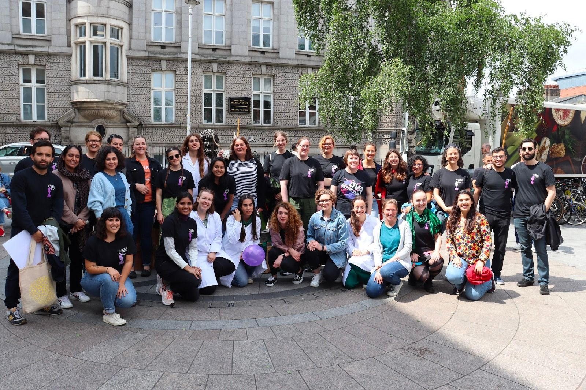
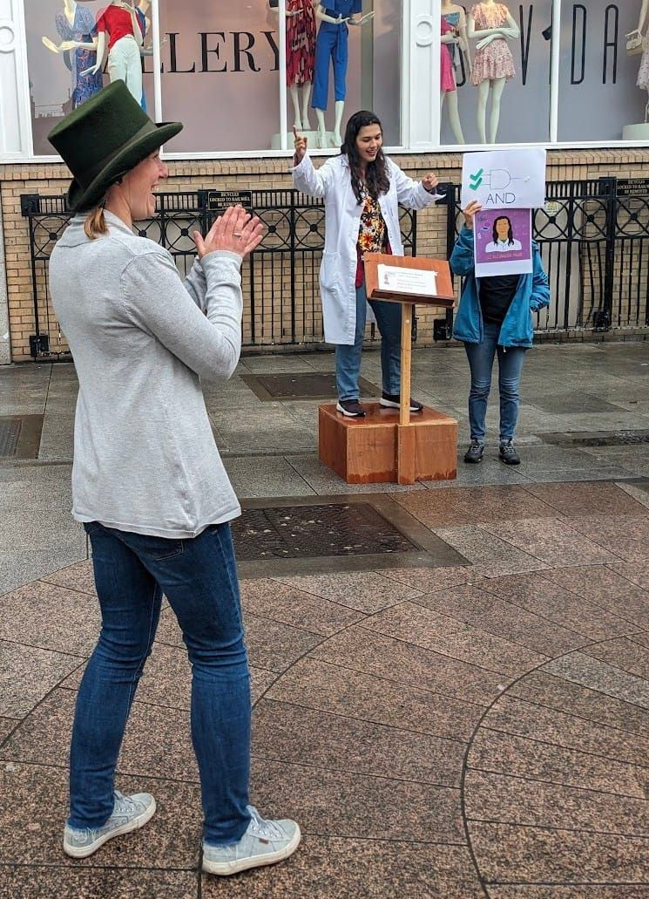

About Me
My name is Luz Alejandra Magre, a third-year PhD researcher.
I am a mechatronics engineer with a never-ending curiosity, ready to take on new projects and topics. You will see around here that I have worked in a variety of different things, from information security and IoT applications, to virtual reality and rehabilitation.
My main interest is to be able to design and create applications that users can actually benefit from. At the moment, I am working with virtual reality, designing and discovering along the way, how we can get the most out of this technology.
Latest News
Soapbox Science Dublin 2023
On June 17th I had the pleasure of participating as a speaker at the Soapbox Science Dublin 2023, where 12 female and non-binary scientists talked about science in the open space of South King Street in Dublin City Centre. It was great to collaborate with brilliant scientists in such a variety of topics!
Even though it was a busy Saturday morning for people in the city, a lot of them stopped to hear us talk about how science is fun and can make a difference. I decided to talk about logic gates, to show people that learning engineering it's not so difficult if you start small.
